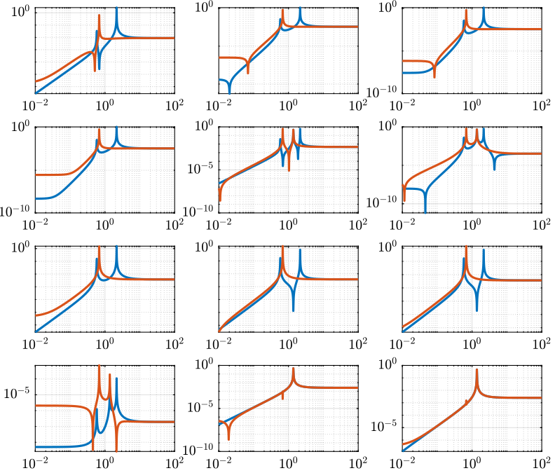

SVD Control
Table of Contents
- 1. Gravimeter - Simscape Model
- 2. Gravimeter - Functions
- 3. Stewart Platform - Simscape Model
- 3.1. Jacobian
- 3.2. Simscape Model
- 3.3. Identification of the plant
- 3.4. Obtained Dynamics
- 3.5. Real Approximation of \(G\) at the decoupling frequency
- 3.6. Verification of the decoupling using the “Gershgorin Radii”
- 3.7. Decoupled Plant
- 3.8. Diagonal Controller
- 3.9. Centralized Control
- 3.10. SVD Control
- 3.11. Results
- 4. Stewart Platform - Analytical Model
- 4.1. Characteristics
- 4.2. Mass Matrix
- 4.3. Jacobian Matrix
- 4.4. Stifnness matrix and Damping matrix
- 4.5. State Space System
- 4.6. Transmissibility
- 4.7. Real approximation of \(G(j\omega)\) at decoupling frequency
- 4.8. Coupled and Decoupled Plant “Gershgorin Radii”
- 4.9. Decoupled Plant
- 4.10. Controller
- 4.11. Closed Loop System
- 4.12. Results
1 Gravimeter - Simscape Model
1.1 Introduction

Figure 1: Model of the gravimeter
1.2 Simscape Model - Parameters
open('gravimeter.slx')
Parameters
l = 1.0; % Length of the mass [m] la = 0.5; % Position of Act. [m] h = 3.4; % Height of the mass [m] ha = 1.7; % Position of Act. [m] m = 400; % Mass [kg] I = 115; % Inertia [kg m^2] k = 15e3; % Actuator Stiffness [N/m] c = 0.03; % Actuator Damping [N/(m/s)] deq = 0.2; % Length of the actuators [m] g = 0; % Gravity [m/s2]
1.3 System Identification - Without Gravity
%% Name of the Simulink File mdl = 'gravimeter'; %% Input/Output definition clear io; io_i = 1; io(io_i) = linio([mdl, '/F1'], 1, 'openinput'); io_i = io_i + 1; io(io_i) = linio([mdl, '/F2'], 1, 'openinput'); io_i = io_i + 1; io(io_i) = linio([mdl, '/F3'], 1, 'openinput'); io_i = io_i + 1; io(io_i) = linio([mdl, '/Acc_side'], 1, 'openoutput'); io_i = io_i + 1; io(io_i) = linio([mdl, '/Acc_side'], 2, 'openoutput'); io_i = io_i + 1; io(io_i) = linio([mdl, '/Acc_top'], 1, 'openoutput'); io_i = io_i + 1; io(io_i) = linio([mdl, '/Acc_top'], 2, 'openoutput'); io_i = io_i + 1; G = linearize(mdl, io); G.InputName = {'F1', 'F2', 'F3'}; G.OutputName = {'Ax1', 'Az1', 'Ax2', 'Az2'};
pole(G)
ans =
-0.000473481142385795 + 21.7596190728632i
-0.000473481142385795 - 21.7596190728632i
-7.49842879459172e-05 + 8.6593576906982i
-7.49842879459172e-05 - 8.6593576906982i
-5.1538686792578e-06 + 2.27025295182756i
-5.1538686792578e-06 - 2.27025295182756i
The plant as 6 states as expected (2 translations + 1 rotation)
size(G)
State-space model with 4 outputs, 3 inputs, and 6 states.
Figure 2: Open Loop Transfer Function from 3 Actuators to 4 Accelerometers
1.4 System Identification - With Gravity
g = 9.80665; % Gravity [m/s2]
Gg = linearize(mdl, io);
Gg.InputName = {'F1', 'F2', 'F3'};
Gg.OutputName = {'Ax1', 'Az1', 'Ax2', 'Az2'};
We can now see that the system is unstable due to gravity.
pole(Gg)
ans =
-10.9848275341252 + 0i
10.9838836405201 + 0i
-7.49855379478109e-05 + 8.65962885770051i
-7.49855379478109e-05 - 8.65962885770051i
-6.68819548733559e-06 + 0.832960422243848i
-6.68819548733559e-06 - 0.832960422243848i

Figure 3: Open Loop Transfer Function from 3 Actuators to 4 Accelerometers with an without gravity
1.5 Analytical Model
1.5.1 Parameters
Bode options.
P = bodeoptions; P.FreqUnits = 'Hz'; P.MagUnits = 'abs'; P.MagScale = 'log'; P.Grid = 'on'; P.PhaseWrapping = 'on'; P.Title.FontSize = 14; P.XLabel.FontSize = 14; P.YLabel.FontSize = 14; P.TickLabel.FontSize = 12; P.Xlim = [1e-1,1e2]; P.MagLowerLimMode = 'manual'; P.MagLowerLim= 1e-3;
Frequency vector.
w = 2*pi*logspace(-1,2,1000); % [rad/s]
1.5.2 Generation of the State Space Model
Mass matrix
M = [m 0 0
0 m 0
0 0 I];
Jacobian of the bottom sensor
Js1 = [1 0 h/2 0 1 -l/2];
Jacobian of the top sensor
Js2 = [1 0 -h/2 0 1 0];
Jacobian of the actuators
Ja = [1 0 ha % Left horizontal actuator 0 1 -la % Left vertical actuator 0 1 la]; % Right vertical actuator Jta = Ja';
Stiffness and Damping matrices
K = k*Jta*Ja; C = c*Jta*Ja;
State Space Matrices
E = [1 0 0
0 1 0
0 0 1]; %projecting ground motion in the directions of the legs
AA = [zeros(3) eye(3)
-M\K -M\C];
BB = [zeros(3,6)
M\Jta M\(k*Jta*E)];
CC = [[Js1;Js2] zeros(4,3);
zeros(2,6)
(Js1+Js2)./2 zeros(2,3)
(Js1-Js2)./2 zeros(2,3)
(Js1-Js2)./(2*h) zeros(2,3)];
DD = [zeros(4,6)
zeros(2,3) eye(2,3)
zeros(6,6)];
State Space model:
- Input = three actuators and three ground motions
- Output = the bottom sensor; the top sensor; the ground motion; the half sum; the half difference; the rotation
system_dec = ss(AA,BB,CC,DD);
size(system_dec)
State-space model with 12 outputs, 6 inputs, and 6 states.
1.5.3 Comparison with the Simscape Model

Figure 4: Comparison of the analytical and the Simscape models
1.5.4 Analysis
% figure % bode(system_dec,P); % return
%% svd decomposition % system_dec_freq = freqresp(system_dec,w); % S = zeros(3,length(w)); % for m = 1:length(w) % S(:,m) = svd(system_dec_freq(1:4,1:3,m)); % end % figure % loglog(w./(2*pi), S);hold on; % % loglog(w./(2*pi), abs(Val(1,:)),w./(2*pi), abs(Val(2,:)),w./(2*pi), abs(Val(3,:))); % xlabel('Frequency [Hz]');ylabel('Singular Value [-]'); % legend('\sigma_1','\sigma_2','\sigma_3');%,'\sigma_4','\sigma_5','\sigma_6'); % ylim([1e-8 1e-2]); % % %condition number % figure % loglog(w./(2*pi), S(1,:)./S(3,:));hold on; % % loglog(w./(2*pi), abs(Val(1,:)),w./(2*pi), abs(Val(2,:)),w./(2*pi), abs(Val(3,:))); % xlabel('Frequency [Hz]');ylabel('Condition number [-]'); % % legend('\sigma_1','\sigma_2','\sigma_3');%,'\sigma_4','\sigma_5','\sigma_6'); % % %performance indicator % system_dec_svd = freqresp(system_dec(1:4,1:3),2*pi*10); % [U,S,V] = svd(system_dec_svd); % H_svd_OL = -eye(3,4);%-[zpk(-2*pi*10,-2*pi*40,40/10) 0 0 0; 0 10*zpk(-2*pi*40,-2*pi*200,40/200) 0 0; 0 0 zpk(-2*pi*2,-2*pi*10,10/2) 0];% - eye(3,4);% % H_svd = pinv(V')*H_svd_OL*pinv(U); % % system_dec_control_svd_ = feedback(system_dec,g*pinv(V')*H*pinv(U)); % % OL_dec = g_svd*H_svd*system_dec(1:4,1:3); % OL_freq = freqresp(OL_dec,w); % OL = G*H % CL_system = feedback(eye(3),-g_svd*H_svd*system_dec(1:4,1:3)); % CL_freq = freqresp(CL_system,w); % CL = (1+G*H)^-1 % % CL_system_2 = feedback(system_dec,H); % % CL_freq_2 = freqresp(CL_system_2,w); % CL = G/(1+G*H) % for i = 1:size(w,2) % OL(:,i) = svd(OL_freq(:,:,i)); % CL (:,i) = svd(CL_freq(:,:,i)); % %CL2 (:,i) = svd(CL_freq_2(:,:,i)); % end % % un = ones(1,length(w)); % figure % loglog(w./(2*pi),OL(3,:)+1,'k',w./(2*pi),OL(3,:)-1,'b',w./(2*pi),1./CL(1,:),'r--',w./(2*pi),un,'k:');hold on;% % % loglog(w./(2*pi), 1./(CL(2,:)),w./(2*pi), 1./(CL(3,:))); % % semilogx(w./(2*pi), 1./(CL2(1,:)),w./(2*pi), 1./(CL2(2,:)),w./(2*pi), 1./(CL2(3,:))); % xlabel('Frequency [Hz]');ylabel('Singular Value [-]'); % legend('GH \sigma_{inf} +1 ','GH \sigma_{inf} -1','S 1/\sigma_{sup}');%,'\lambda_1','\lambda_2','\lambda_3'); % % figure % loglog(w./(2*pi),OL(1,:)+1,'k',w./(2*pi),OL(1,:)-1,'b',w./(2*pi),1./CL(3,:),'r--',w./(2*pi),un,'k:');hold on;% % % loglog(w./(2*pi), 1./(CL(2,:)),w./(2*pi), 1./(CL(3,:))); % % semilogx(w./(2*pi), 1./(CL2(1,:)),w./(2*pi), 1./(CL2(2,:)),w./(2*pi), 1./(CL2(3,:))); % xlabel('Frequency [Hz]');ylabel('Singular Value [-]'); % legend('GH \sigma_{sup} +1 ','GH \sigma_{sup} -1','S 1/\sigma_{inf}');%,'\lambda_1','\lambda_2','\lambda_3');
1.5.5 Control Section
system_dec_10Hz = freqresp(system_dec,2*pi*10); system_dec_0Hz = freqresp(system_dec,0); system_decReal_10Hz = pinv(align(system_dec_10Hz)); [Ureal,Sreal,Vreal] = svd(system_decReal_10Hz(1:4,1:3)); normalizationMatrixReal = abs(pinv(Ureal)*system_dec_0Hz(1:4,1:3)*pinv(Vreal')); [U,S,V] = svd(system_dec_10Hz(1:4,1:3)); normalizationMatrix = abs(pinv(U)*system_dec_0Hz(1:4,1:3)*pinv(V')); H_dec = ([zpk(-2*pi*5,-2*pi*30,30/5) 0 0 0 0 zpk(-2*pi*4,-2*pi*20,20/4) 0 0 0 0 0 zpk(-2*pi,-2*pi*10,10)]); H_cen_OL = [zpk(-2*pi,-2*pi*10,10) 0 0; 0 zpk(-2*pi,-2*pi*10,10) 0; 0 0 zpk(-2*pi*5,-2*pi*30,30/5)]; H_cen = pinv(Jta)*H_cen_OL*pinv([Js1; Js2]); % H_svd_OL = -[1/normalizationMatrix(1,1) 0 0 0 % 0 1/normalizationMatrix(2,2) 0 0 % 0 0 1/normalizationMatrix(3,3) 0]; % H_svd_OL_real = -[1/normalizationMatrixReal(1,1) 0 0 0 % 0 1/normalizationMatrixReal(2,2) 0 0 % 0 0 1/normalizationMatrixReal(3,3) 0]; H_svd_OL = -[1/normalizationMatrix(1,1)*zpk(-2*pi*10,-2*pi*60,60/10) 0 0 0 0 1/normalizationMatrix(2,2)*zpk(-2*pi*5,-2*pi*30,30/5) 0 0 0 0 1/normalizationMatrix(3,3)*zpk(-2*pi*2,-2*pi*10,10/2) 0]; H_svd_OL_real = -[1/normalizationMatrixReal(1,1)*zpk(-2*pi*10,-2*pi*60,60/10) 0 0 0 0 1/normalizationMatrixReal(2,2)*zpk(-2*pi*5,-2*pi*30,30/5) 0 0 0 0 1/normalizationMatrixReal(3,3)*zpk(-2*pi*2,-2*pi*10,10/2) 0]; % H_svd_OL_real = -[zpk(-2*pi*10,-2*pi*40,40/10) 0 0 0; 0 10*zpk(-2*pi*10,-2*pi*100,100/10) 0 0; 0 0 zpk(-2*pi*2,-2*pi*10,10/2) 0];%-eye(3,4); % H_svd_OL = -[zpk(-2*pi*10,-2*pi*40,40/10) 0 0 0; 0 zpk(-2*pi*4,-2*pi*20,4/20) 0 0; 0 0 zpk(-2*pi*2,-2*pi*10,10/2) 0];% - eye(3,4);% H_svd = pinv(V')*H_svd_OL*pinv(U); H_svd_real = pinv(Vreal')*H_svd_OL_real*pinv(Ureal); OL_dec = g*H_dec*system_dec(1:4,1:3); OL_cen = g*H_cen_OL*pinv([Js1; Js2])*system_dec(1:4,1:3)*pinv(Jta); OL_svd = 100*H_svd_OL*pinv(U)*system_dec(1:4,1:3)*pinv(V'); OL_svd_real = 100*H_svd_OL_real*pinv(Ureal)*system_dec(1:4,1:3)*pinv(Vreal');
% figure % bode(OL_dec,w,P);title('OL Decentralized'); % figure % bode(OL_cen,w,P);title('OL Centralized');
figure bode(g*system_dec(1:4,1:3),w,P); title('gain * Plant');
figure bode(OL_svd,OL_svd_real,w,P); title('OL SVD'); legend('SVD of Complex plant','SVD of real approximation of the complex plant')
figure bode(system_dec(1:4,1:3),pinv(U)*system_dec(1:4,1:3)*pinv(V'),P);
CL_dec = feedback(system_dec,g*H_dec,[1 2 3],[1 2 3 4]); CL_cen = feedback(system_dec,g*H_cen,[1 2 3],[1 2 3 4]); CL_svd = feedback(system_dec,100*H_svd,[1 2 3],[1 2 3 4]); CL_svd_real = feedback(system_dec,100*H_svd_real,[1 2 3],[1 2 3 4]);
pzmap_testCL(system_dec,H_dec,g,[1 2 3],[1 2 3 4])
title('Decentralized control');
pzmap_testCL(system_dec,H_cen,g,[1 2 3],[1 2 3 4])
title('Centralized control');
pzmap_testCL(system_dec,H_svd,100,[1 2 3],[1 2 3 4])
title('SVD control');
pzmap_testCL(system_dec,H_svd_real,100,[1 2 3],[1 2 3 4])
title('Real approximation SVD control');
P.Ylim = [1e-8 1e-3]; figure bodemag(system_dec(1:4,1:3),CL_dec(1:4,1:3),CL_cen(1:4,1:3),CL_svd(1:4,1:3),CL_svd_real(1:4,1:3),P); title('Motion/actuator') legend('Control OFF','Decentralized control','Centralized control','SVD control','SVD control real appr.');
P.Ylim = [1e-5 1e1]; figure bodemag(system_dec(1:4,4:6),CL_dec(1:4,4:6),CL_cen(1:4,4:6),CL_svd(1:4,4:6),CL_svd_real(1:4,4:6),P); title('Transmissibility'); legend('Control OFF','Decentralized control','Centralized control','SVD control','SVD control real appr.');
figure bodemag(system_dec([7 9],4:6),CL_dec([7 9],4:6),CL_cen([7 9],4:6),CL_svd([7 9],4:6),CL_svd_real([7 9],4:6),P); title('Transmissibility from half sum and half difference in the X direction'); legend('Control OFF','Decentralized control','Centralized control','SVD control','SVD control real appr.');
figure bodemag(system_dec([8 10],4:6),CL_dec([8 10],4:6),CL_cen([8 10],4:6),CL_svd([8 10],4:6),CL_svd_real([8 10],4:6),P); title('Transmissibility from half sum and half difference in the Z direction'); legend('Control OFF','Decentralized control','Centralized control','SVD control','SVD control real appr.');
1.5.6 Greshgorin radius
system_dec_freq = freqresp(system_dec,w); x1 = zeros(1,length(w)); z1 = zeros(1,length(w)); x2 = zeros(1,length(w)); S1 = zeros(1,length(w)); S2 = zeros(1,length(w)); S3 = zeros(1,length(w)); for t = 1:length(w) x1(t) = (abs(system_dec_freq(1,2,t))+abs(system_dec_freq(1,3,t)))/abs(system_dec_freq(1,1,t)); z1(t) = (abs(system_dec_freq(2,1,t))+abs(system_dec_freq(2,3,t)))/abs(system_dec_freq(2,2,t)); x2(t) = (abs(system_dec_freq(3,1,t))+abs(system_dec_freq(3,2,t)))/abs(system_dec_freq(3,3,t)); system_svd = pinv(Ureal)*system_dec_freq(1:4,1:3,t)*pinv(Vreal'); S1(t) = (abs(system_svd(1,2))+abs(system_svd(1,3)))/abs(system_svd(1,1)); S2(t) = (abs(system_svd(2,1))+abs(system_svd(2,3)))/abs(system_svd(2,2)); S2(t) = (abs(system_svd(3,1))+abs(system_svd(3,2)))/abs(system_svd(3,3)); end limit = 0.5*ones(1,length(w));
figure loglog(w./(2*pi),x1,w./(2*pi),z1,w./(2*pi),x2,w./(2*pi),limit,'--'); legend('x_1','z_1','x_2','Limit'); xlabel('Frequency [Hz]'); ylabel('Greshgorin radius [-]');
figure loglog(w./(2*pi),S1,w./(2*pi),S2,w./(2*pi),S3,w./(2*pi),limit,'--'); legend('S1','S2','S3','Limit'); xlabel('Frequency [Hz]'); ylabel('Greshgorin radius [-]'); % set(gcf,'color','w')
1.5.7 Injecting ground motion in the system to have the output
Fr = logspace(-2,3,1e3); w=2*pi*Fr*1i; %fit of the ground motion data in m/s^2/rtHz Fr_ground_x = [0.07 0.1 0.15 0.3 0.7 0.8 0.9 1.2 5 10]; n_ground_x1 = [4e-7 4e-7 2e-6 1e-6 5e-7 5e-7 5e-7 1e-6 1e-5 3.5e-5]; Fr_ground_v = [0.07 0.08 0.1 0.11 0.12 0.15 0.25 0.6 0.8 1 1.2 1.6 2 6 10]; n_ground_v1 = [7e-7 7e-7 7e-7 1e-6 1.2e-6 1.5e-6 1e-6 9e-7 7e-7 7e-7 7e-7 1e-6 2e-6 1e-5 3e-5]; n_ground_x = interp1(Fr_ground_x,n_ground_x1,Fr,'linear'); n_ground_v = interp1(Fr_ground_v,n_ground_v1,Fr,'linear'); % figure % loglog(Fr,abs(n_ground_v),Fr_ground_v,n_ground_v1,'*'); % xlabel('Frequency [Hz]');ylabel('ASD [m/s^2 /rtHz]'); % return %converting into PSD n_ground_x = (n_ground_x).^2; n_ground_v = (n_ground_v).^2; %Injecting ground motion in the system and getting the outputs system_dec_f = (freqresp(system_dec,abs(w))); PHI = zeros(size(Fr,2),12,12); for p = 1:size(Fr,2) Sw=zeros(6,6); Iact = zeros(3,3); Sw(4,4) = n_ground_x(p); Sw(5,5) = n_ground_v(p); Sw(6,6) = n_ground_v(p); Sw(1:3,1:3) = Iact; PHI(p,:,:) = (system_dec_f(:,:,p))*Sw(:,:)*(system_dec_f(:,:,p))'; end x1 = PHI(:,1,1); z1 = PHI(:,2,2); x2 = PHI(:,3,3); z2 = PHI(:,4,4); wx = PHI(:,5,5); wz = PHI(:,6,6); x12 = PHI(:,1,3); z12 = PHI(:,2,4); PHIwx = PHI(:,1,5); PHIwz = PHI(:,2,6); xsum = PHI(:,7,7); zsum = PHI(:,8,8); xdelta = PHI(:,9,9); zdelta = PHI(:,10,10); rot = PHI(:,11,11);
2 Gravimeter - Functions
2.1 align
This Matlab function is accessible here.
function [A] = align(V) %A!ALIGN(V) returns a constat matrix A which is the real alignment of the %INVERSE of the complex input matrix V %from Mohit slides if (nargin ==0) || (nargin > 1) disp('usage: mat_inv_real = align(mat)') return end D = pinv(real(V'*V)); A = D*real(V'*diag(exp(1i * angle(diag(V*D*V.'))/2))); end
2.2 pzmap_testCL
This Matlab function is accessible here.
function [] = pzmap_testCL(system,H,gain,feedin,feedout) % evaluate and plot the pole-zero map for the closed loop system for % different values of the gain [~, n] = size(gain); [m1, n1, ~] = size(H); [~,n2] = size(feedin); figure for i = 1:n % if n1 == n2 system_CL = feedback(system,gain(i)*H,feedin,feedout); [P,Z] = pzmap(system_CL); plot(real(P(:)),imag(P(:)),'x',real(Z(:)),imag(Z(:)),'o');hold on xlabel('Real axis (s^{-1})');ylabel('Imaginary Axis (s^{-1})'); % clear P Z % else % system_CL = feedback(system,gain(i)*H(:,1+(i-1)*m1:m1+(i-1)*m1),feedin,feedout); % % [P,Z] = pzmap(system_CL); % plot(real(P(:)),imag(P(:)),'x',real(Z(:)),imag(Z(:)),'o');hold on % xlabel('Real axis (s^{-1})');ylabel('Imaginary Axis (s^{-1})'); % clear P Z % end end str = {strcat('gain = ' , num2str(gain(1)))}; % at the end of first loop, z being loop output str = [str , strcat('gain = ' , num2str(gain(1)))]; % after 2nd loop for i = 2:n str = [str , strcat('gain = ' , num2str(gain(i)))]; % after 2nd loop str = [str , strcat('gain = ' , num2str(gain(i)))]; % after 2nd loop end legend(str{:}) end
3 Stewart Platform - Simscape Model
3.1 Jacobian
First, the position of the “joints” (points of force application) are estimated and the Jacobian computed.
open('drone_platform_jacobian.slx');
sim('drone_platform_jacobian');
Aa = [a1.Data(1,:); a2.Data(1,:); a3.Data(1,:); a4.Data(1,:); a5.Data(1,:); a6.Data(1,:)]'; Ab = [b1.Data(1,:); b2.Data(1,:); b3.Data(1,:); b4.Data(1,:); b5.Data(1,:); b6.Data(1,:)]'; As = (Ab - Aa)./vecnorm(Ab - Aa); l = vecnorm(Ab - Aa)'; J = [As' , cross(Ab, As)']; save('./jacobian.mat', 'Aa', 'Ab', 'As', 'l', 'J');
3.2 Simscape Model
open('stewart_platform/drone_platform.slx');
Definition of spring parameters
kx = 50; % [N/m] ky = 50; kz = 50; cx = 0.025; % [Nm/rad] cy = 0.025; cz = 0.025;
We load the Jacobian.
load('./jacobian.mat', 'Aa', 'Ab', 'As', 'l', 'J');
3.3 Identification of the plant
The dynamics is identified from forces applied by each legs to the measured acceleration of the top platform.
%% Name of the Simulink File mdl = 'drone_platform'; %% Input/Output definition clear io; io_i = 1; io(io_i) = linio([mdl, '/Dw'], 1, 'openinput'); io_i = io_i + 1; io(io_i) = linio([mdl, '/u'], 1, 'openinput'); io_i = io_i + 1; io(io_i) = linio([mdl, '/Inertial Sensor'], 1, 'openoutput'); io_i = io_i + 1; G = linearize(mdl, io); G.InputName = {'Dwx', 'Dwy', 'Dwz', 'Rwx', 'Rwy', 'Rwz', ... 'F1', 'F2', 'F3', 'F4', 'F5', 'F6'}; G.OutputName = {'Ax', 'Ay', 'Az', 'Arx', 'Ary', 'Arz'};
There are 24 states (6dof for the bottom platform + 6dof for the top platform).
size(G)
State-space model with 6 outputs, 12 inputs, and 24 states.
% G = G*blkdiag(inv(J), eye(6)); % G.InputName = {'Dw1', 'Dw2', 'Dw3', 'Dw4', 'Dw5', 'Dw6', ... % 'F1', 'F2', 'F3', 'F4', 'F5', 'F6'};
Thanks to the Jacobian, we compute the transfer functions in the frame of the legs and in an inertial frame.
Gx = G*blkdiag(eye(6), inv(J')); Gx.InputName = {'Dwx', 'Dwy', 'Dwz', 'Rwx', 'Rwy', 'Rwz', ... 'Fx', 'Fy', 'Fz', 'Mx', 'My', 'Mz'}; Gl = J*G; Gl.OutputName = {'A1', 'A2', 'A3', 'A4', 'A5', 'A6'};
3.4 Obtained Dynamics

Figure 5: Stewart Platform Plant from forces applied by the legs to the acceleration of the platform

Figure 6: Stewart Platform Plant from torques applied by the legs to the angular acceleration of the platform

Figure 7: Stewart Platform Plant from forces applied by the legs to displacement of the legs

Figure 8: Transmissibility
3.5 Real Approximation of \(G\) at the decoupling frequency
Let’s compute a real approximation of the complex matrix \(H_1\) which corresponds to the the transfer function \(G_c(j\omega_c)\) from forces applied by the actuators to the measured acceleration of the top platform evaluated at the frequency \(\omega_c\).
wc = 2*pi*20; % Decoupling frequency [rad/s] Gc = G({'Ax', 'Ay', 'Az', 'Arx', 'Ary', 'Arz'}, ... {'F1', 'F2', 'F3', 'F4', 'F5', 'F6'}); % Transfer function to find a real approximation H1 = evalfr(Gc, j*wc);
The real approximation is computed as follows:
D = pinv(real(H1'*H1)); H1 = inv(D*real(H1'*diag(exp(j*angle(diag(H1*D*H1.'))/2))));
3.6 Verification of the decoupling using the “Gershgorin Radii”
First, the Singular Value Decomposition of \(H_1\) is performed: \[ H_1 = U \Sigma V^H \]
[U,S,V] = svd(H1);
Then, the “Gershgorin Radii” is computed for the plant \(G_c(s)\) and the “SVD Decoupled Plant” \(G_d(s)\): \[ G_d(s) = U^T G_c(s) V \]
This is computed over the following frequencies.
freqs = logspace(-2, 2, 1000); % [Hz]
Gershgorin Radii for the coupled plant:
Gr_coupled = zeros(length(freqs), size(Gc,2)); H = abs(squeeze(freqresp(Gc, freqs, 'Hz'))); for out_i = 1:size(Gc,2) Gr_coupled(:, out_i) = squeeze((sum(H(out_i,:,:)) - H(out_i,out_i,:))./H(out_i, out_i, :)); end
Gershgorin Radii for the decoupled plant using SVD:
Gd = U'*Gc*V; Gr_decoupled = zeros(length(freqs), size(Gd,2)); H = abs(squeeze(freqresp(Gd, freqs, 'Hz'))); for out_i = 1:size(Gd,2) Gr_decoupled(:, out_i) = squeeze((sum(H(out_i,:,:)) - H(out_i,out_i,:))./H(out_i, out_i, :)); end
Gershgorin Radii for the decoupled plant using the Jacobian:
Gj = Gc*inv(J'); Gr_jacobian = zeros(length(freqs), size(Gj,2)); H = abs(squeeze(freqresp(Gj, freqs, 'Hz'))); for out_i = 1:size(Gj,2) Gr_jacobian(:, out_i) = squeeze((sum(H(out_i,:,:)) - H(out_i,out_i,:))./H(out_i, out_i, :)); end

Figure 9: Gershgorin Radii of the Coupled and Decoupled plants
3.7 Decoupled Plant
Let’s see the bode plot of the decoupled plant \(G_d(s)\). \[ G_d(s) = U^T G_c(s) V \]

Figure 10: Decoupled Plant using SVD

Figure 11: Decoupled Plant using the Jacobian
3.8 Diagonal Controller
The controller \(K\) is a diagonal controller consisting a low pass filters with a crossover frequency \(\omega_c\) and a DC gain \(C_g\).
wc = 2*pi*0.1; % Crossover Frequency [rad/s] C_g = 50; % DC Gain K = eye(6)*C_g/(s+wc);
3.9 Centralized Control
The control diagram for the centralized control is shown below.
The controller \(K_c\) is “working” in an cartesian frame. The Jacobian is used to convert forces in the cartesian frame to forces applied by the actuators.

G_cen = feedback(G, inv(J')*K, [7:12], [1:6]);
3.10 SVD Control
The SVD control architecture is shown below. The matrices \(U\) and \(V\) are used to decoupled the plant \(G\).

SVD Control
G_svd = feedback(G, pinv(V')*K*pinv(U), [7:12], [1:6]);
3.11 Results
Let’s first verify the stability of the closed-loop systems:
isstable(G_cen)
ans = logical 1
isstable(G_svd)
ans = logical 1
The obtained transmissibility in Open-loop, for the centralized control as well as for the SVD control are shown in Figure 14.

Figure 14: Obtained Transmissibility
4 Stewart Platform - Analytical Model
4.1 Characteristics
L = 0.055; Zc = 0; m = 0.2; k = 1e3; c = 2*0.1*sqrt(k*m); Rx = 0.04; Rz = 0.04; Ix = m*Rx^2; Iy = m*Rx^2; Iz = m*Rz^2;
4.2 Mass Matrix
M = m*[1 0 0 0 Zc 0; 0 1 0 -Zc 0 0; 0 0 1 0 0 0; 0 -Zc 0 Rx^2+Zc^2 0 0; Zc 0 0 0 Rx^2+Zc^2 0; 0 0 0 0 0 Rz^2];
4.3 Jacobian Matrix
Bj=1/sqrt(6)*[ 1 1 -2 1 1 -2; sqrt(3) -sqrt(3) 0 sqrt(3) -sqrt(3) 0; sqrt(2) sqrt(2) sqrt(2) sqrt(2) sqrt(2) sqrt(2); 0 0 L L -L -L; -L*2/sqrt(3) -L*2/sqrt(3) L/sqrt(3) L/sqrt(3) L/sqrt(3) L/sqrt(3); L*sqrt(2) -L*sqrt(2) L*sqrt(2) -L*sqrt(2) L*sqrt(2) -L*sqrt(2)];
4.4 Stifnness matrix and Damping matrix
kv = k/3; % [N/m] kh = 0.5*k/3; % [N/m] K = diag([3*kh,3*kh,3*kv,3*kv*Rx^2/2,3*kv*Rx^2/2,3*kh*Rx^2]); % Stiffness Matrix C = c*K/100000; % Damping Matrix
4.5 State Space System
A = [zeros(6) eye(6); -M\K -M\C]; Bw = [zeros(6); -eye(6)]; Bu = [zeros(6); M\Bj]; Co = [-M\K -M\C]; D = [zeros(6) M\Bj]; ST = ss(A,[Bw Bu],Co,D);
- OUT 1-6: 6 dof
- IN 1-6 : ground displacement in the directions of the legs
- IN 7-12: forces in the actuators.
ST.StateName = {'x';'y';'z';'theta_x';'theta_y';'theta_z';...
'dx';'dy';'dz';'dtheta_x';'dtheta_y';'dtheta_z'};
ST.InputName = {'w1';'w2';'w3';'w4';'w5';'w6';...
'u1';'u2';'u3';'u4';'u5';'u6'};
ST.OutputName = {'ax';'ay';'az';'atheta_x';'atheta_y';'atheta_z'};
4.6 Transmissibility
TR=ST*[eye(6); zeros(6)];
figure
subplot(231)
bodemag(TR(1,1),opts);
subplot(232)
bodemag(TR(2,2),opts);
subplot(233)
bodemag(TR(3,3),opts);
subplot(234)
bodemag(TR(4,4),opts);
subplot(235)
bodemag(TR(5,5),opts);
subplot(236)
bodemag(TR(6,6),opts);

Figure 15: Transmissibility
4.7 Real approximation of \(G(j\omega)\) at decoupling frequency
sys1 = ST*[zeros(6); eye(6)]; % take only the forces inputs dec_fr = 20; H1 = evalfr(sys1,j*2*pi*dec_fr); H2 = H1; D = pinv(real(H2'*H2)); H1 = inv(D*real(H2'*diag(exp(j*angle(diag(H2*D*H2.'))/2)))) ; [U,S,V] = svd(H1); wf = logspace(-1,2,1000); for i = 1:length(wf) H = abs(evalfr(sys1,j*2*pi*wf(i))); H_dec = abs(evalfr(U'*sys1*V,j*2*pi*wf(i))); for j = 1:size(H,2) g_r1(i,j) = (sum(H(j,:))-H(j,j))/H(j,j); g_r2(i,j) = (sum(H_dec(j,:))-H_dec(j,j))/H_dec(j,j); % keyboard end g_lim(i) = 0.5; end
4.8 Coupled and Decoupled Plant “Gershgorin Radii”
figure; title('Coupled plant') loglog(wf,g_r1(:,1),wf,g_r1(:,2),wf,g_r1(:,3),wf,g_r1(:,4),wf,g_r1(:,5),wf,g_r1(:,6),wf,g_lim,'--'); legend('$a_x$','$a_y$','$a_z$','$\theta_x$','$\theta_y$','$\theta_z$','Limit'); xlabel('Frequency (Hz)'); ylabel('Gershgorin Radii')

Figure 16: Gershorin Raddi for the coupled plant
figure; title('Decoupled plant (10 Hz)') loglog(wf,g_r2(:,1),wf,g_r2(:,2),wf,g_r2(:,3),wf,g_r2(:,4),wf,g_r2(:,5),wf,g_r2(:,6),wf,g_lim,'--'); legend('$S_1$','$S_2$','$S_3$','$S_4$','$S_5$','$S_6$','Limit'); xlabel('Frequency (Hz)'); ylabel('Gershgorin Radii')

Figure 17: Gershorin Raddi for the decoupled plant
4.9 Decoupled Plant
figure; bodemag(U'*sys1*V,opts)

Figure 18: Decoupled Plant
4.10 Controller
fc = 2*pi*0.1; % Crossover Frequency [rad/s] c_gain = 50; % cont = eye(6)*c_gain/(s+fc);
4.11 Closed Loop System
FEEDIN = [7:12]; % Input of controller FEEDOUT = [1:6]; % Output of controller
Centralized Control
STcen = feedback(ST, inv(Bj)*cont, FEEDIN, FEEDOUT); TRcen = STcen*[eye(6); zeros(6)];
SVD Control
STsvd = feedback(ST, pinv(V')*cont*pinv(U), FEEDIN, FEEDOUT); TRsvd = STsvd*[eye(6); zeros(6)];
4.12 Results
figure subplot(231) bodemag(TR(1,1),TRcen(1,1),TRsvd(1,1),opts) legend('OL','Centralized','SVD') subplot(232) bodemag(TR(2,2),TRcen(2,2),TRsvd(2,2),opts) legend('OL','Centralized','SVD') subplot(233) bodemag(TR(3,3),TRcen(3,3),TRsvd(3,3),opts) legend('OL','Centralized','SVD') subplot(234) bodemag(TR(4,4),TRcen(4,4),TRsvd(4,4),opts) legend('OL','Centralized','SVD') subplot(235) bodemag(TR(5,5),TRcen(5,5),TRsvd(5,5),opts) legend('OL','Centralized','SVD') subplot(236) bodemag(TR(6,6),TRcen(6,6),TRsvd(6,6),opts) legend('OL','Centralized','SVD')

Figure 19: Comparison of the obtained transmissibility for the centralized control and the SVD control